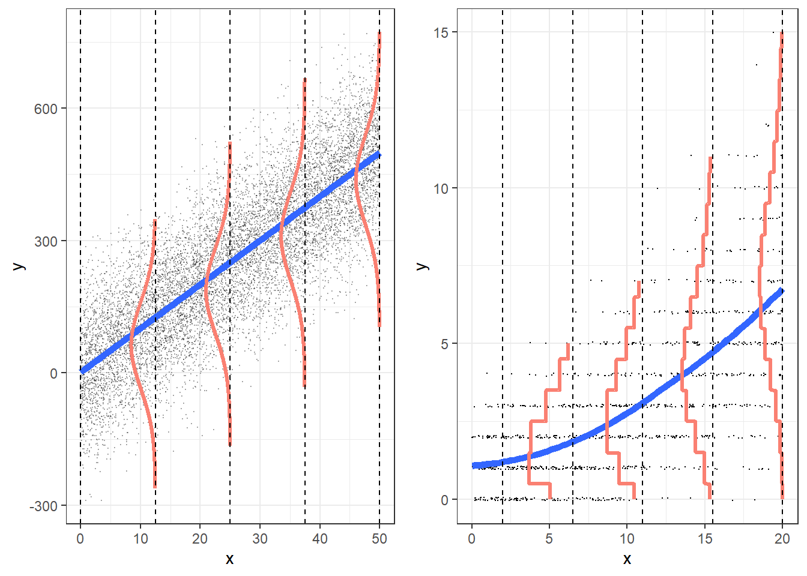
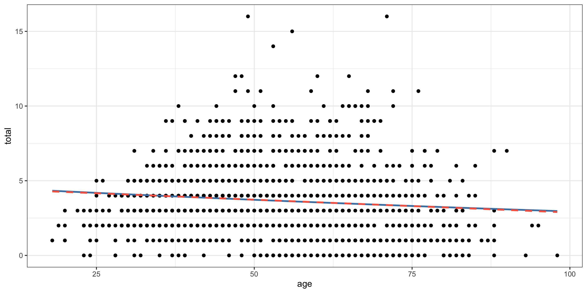
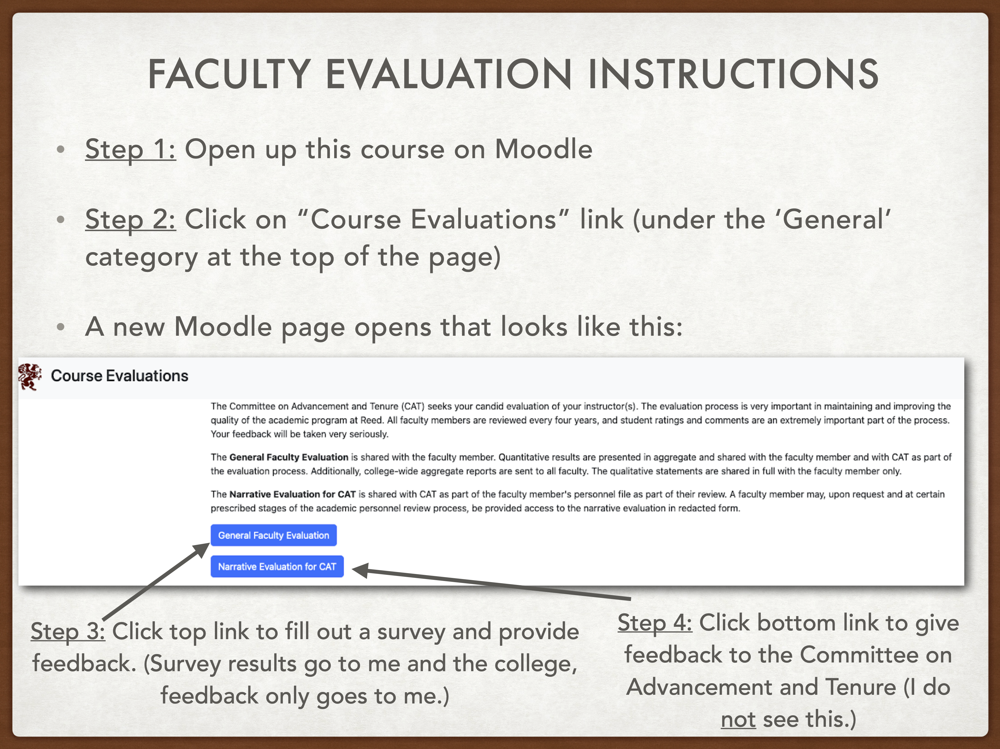

# A tibble: 6 × 6
...1 location age total numLT5 roof
<dbl> <chr> <dbl> <dbl> <dbl> <chr>
1 1 CentralLuzon 65 0 0 Predominantly Strong Material
2 2 MetroManila 75 3 0 Predominantly Strong Material
3 3 DavaoRegion 54 4 0 Predominantly Strong Material
4 4 Visayas 49 3 0 Predominantly Strong Material
5 5 MetroManila 74 3 0 Predominantly Strong Material
6 6 Visayas 59 6 0 Predominantly Strong Material
Poisson Regression
Grayson White
Stat 243
Fall 2026, Week 12
Recall: GLMs
A generalized linear model has three components:
- A distribution of \(y_i\)
- A link function, \(g(\mu_i)\), where \(\mu_i = \mathbb{E}(y_i)\)
- Linear predictor, \(\eta_i\)
A GLM is written as follows:
\[ y_i \overset{\text{ind}}{\sim} Dist(g^{-1}(\eta_i)) \]
where:
- \(Dist\) is the assumed distribution of \(y_i\),
- \(g^{-1}(\eta_i)\) is the value of the inverse link, which is \(\mu_i\), and
- \(\eta_i\) is the linear predictor.
Binary response GLMs
Logistic Regression:
\[ y_i \overset{\text{ind}}{\sim} Bern\left(\frac{\exp(\beta_0 + \beta_1 x_{1i} + \cdots + \beta_p x_{pi})}{1 + \exp(\beta_0 + \beta_1 x_{1i} + \cdots + \beta_p x_{pi})}\right) \]
- Distribution of \(y_i\): Bernoulli
- Link function: logit; \(g(p_i) = \log\left(\frac{p_i}{1 - p_i}\right)\), so \(p_i = g^{-1}(\eta_i) = \frac{\exp(\eta_i)}{1 + \exp(\eta_i)}\)
- Linear predictor: \(\eta_i = \beta_0 + \beta_1 x_{1i} + \cdots + \beta_p x_{pi}\)
Binary response GLMs
Probit Regression:
\[ y_i \overset{\text{ind}}{\sim} Bern(\Phi(\beta_0 + \beta_1 x_{1i} + \cdots + \beta_p x_{pi})) \]
- Distribution of \(y_i\): Bernoulli
- Link function: \(g(p_i) = \Phi^{-1}(p_i)\), so \(p_i = g^{-1}(\eta_i) = \Phi(\eta_i)\),
- where \(\Phi(z)\) is the CDF of a standard normal random variable
- Linear predictor: \(\eta_i = \beta_0 + \beta_1 x_{1i} + \cdots + \beta_p x_{pi}\)
Quantitative response GLM
Linear Regression:
\[ y_i \overset{\text{ind}}{\sim} N(\beta_0 + \beta_1 x_{1i} + \cdots + \beta_p x_{pi},~ \sigma^2) \]
- Distribution of \(y_i\): Normal
- Link function: identity; \(g(\mu_i) = \mu_i\), so \(\mu_i = g^{-1}(\eta_i) = \eta_i\)
- Linear predictor: \(\eta_i = \beta_0 + \beta_1 x_{1i} + \cdots + \beta_p x_{pi}\)
Count response GLM
Poisson Regression:
\[ y_i \overset{\text{ind}}{\sim} Pois\left(\exp(\beta_0 + \beta_1 x_{1i} + \cdots + \beta_p x_{pi})\right) \]
- Distribution of \(y_i\): Poisson
- Link function: log; \(g(\lambda_i) = \log(\lambda_i)\), so \(\lambda_i = g^{-1}(\eta_i) = \exp(\eta_i)\)
- Linear predictor: \(\eta_i = \beta_0 + \beta_1 x_{1i} + \cdots + \beta_p x_{pi}\)
Recall: If \(X \sim Pois(\lambda)\), then:
- \(\mathbb{E}(X) = \lambda\), and
- \(\mathrm{Var}(X) = \lambda\).
A graphical comparison of Normal and Poisson regression

Poisson regression assumptions
Now that we have written down the Poisson regression model,
\[ y_i \overset{\text{ind}}{\sim} Pois\left(\exp(\beta_0 + \beta_1 x_{1i} + \cdots + \beta_p x_{pi})\right) \]
we can see its assumptions:
- Poisson Response: The response variable is a count, described by a Poisson distribution.
- Independence: The observations must be independent of one another.
- Mean = Variance: By definition, the mean of a Poisson random variable must be equal to its variance.
- Linearity: The log of the mean rate, \(\log(\lambda)\), must be a linear function of \(x\).
Poisson regression in R
Data on households in the Philippines (more info: Chapter 4.4 of Beyond MLR)
Each row represents a household
age= the age of the head of householdtotal= the number of people in the household other than the head
Exploratory data analysis
Poisson regression in R
Plotting Poisson regression in R
Plotting Poisson vs linear regression

Linear regression produces nearly the same line. Advantages of Poisson regression?
Poisson Assumptions: Have we met them?
Poisson Assumptions
Poisson Response: The response variable is a count, described by a Poisson distribution.

Poisson Assumptions
Poisson Response: The response variable is a count, described by a Poisson distribution.
Poisson Assumptions
Independence: The observations must be independent of one another.
- Check via data context.
Poisson Assumptions
Mean = Variance: By definition, the mean of a Poisson random variable must be equal to its variance.
# A tibble: 1 × 2
mean var
<dbl> <dbl>
1 3.68 5.53- Note, this must be true across all “levels” of the predictor(s)!
# A tibble: 17 × 4
age_bin mean var n
<fct> <dbl> <dbl> <int>
1 [17.5,22.5] 1.86 0.810 7
2 (22.5,27.5] 2.43 1.36 30
3 (27.5,32.5] 3 1.70 80
4 (32.5,37.5] 3.72 2.86 117
5 (37.5,42.5] 3.87 3.52 167
6 (42.5,47.5] 4.47 4.81 175
7 (47.5,52.5] 4.25 6.41 197
8 (52.5,57.5] 4.05 6.43 173
9 (57.5,62.5] 3.86 5.69 154
10 (62.5,67.5] 3.54 6.79 138
11 (67.5,72.5] 3.32 9.49 103
12 (72.5,77.5] 2.43 4.27 88
13 (77.5,82.5] 2.33 3.15 42
14 (82.5,87.5] 2 3 19
15 (87.5,92.5] 3.33 9.07 6
16 (92.5,97.5] 1.33 1.33 3
17 (97.5,102] 0 NA 1Poisson Assumptions
Linearity: The log of the mean rate, \(\log(\lambda)\), must be a linear function of \(x\).
Poisson Assumptions
Want to fix linearity and Mean = Variance assumptions. How?
- Linearity: quadratic term will do the trick!
- Mean = Variance: a bit harder…
- However, this assumption only causes issues the value of our estimated standard errors (typically, these become under estimated), not our \(\hat\beta\)’s!
- We can account for this degradation by estimating a dispersion parameter!
Dispersion parameter for Poisson regression:
\[ \hat\phi = \left(\sum_{i=1}^n\frac{(y_i - \hat y_i)^2}{\hat y_i} \right) / (n-p) \]
- If \(\hat\phi = 1\) we have perfectly specified dispersion for Poisson regression, \(\hat\phi > 1\) implies overdispersion, and \(\hat\phi < 1\) implies underdispersion.
Accounting for Overdispersion
To account for overdispersion in Poisson regression, we multiply the estimated dispersion parameter with the estimated standard errors:
\[ \widehat{SE}_Q(\hat\beta) = \widehat{SE}(\hat\beta) \cdot \sqrt{\hat\phi} \]
Overdispersion via quasi-Poisson
In essence, a dispersion parameter allows us to use the Poisson distribution to model counts through a GLM, when Mean \(\neq\) Variance. For details on (over)dispersion, see Beyond MLR Section 4.9.
In R, accounting for overdispersion and non-linearity:
Call:
glm(formula = total ~ poly(age, degree = 2), family = quasipoisson,
data = household)
Coefficients:
Estimate Std. Error t value Pr(>|t|)
(Intercept) 1.28739 0.01638 78.585 < 2e-16 ***
poly(age, degree = 2)1 -3.35563 0.69839 -4.805 1.7e-06 ***
poly(age, degree = 2)2 -6.83255 0.73837 -9.254 < 2e-16 ***
---
Signif. codes: 0 '***' 0.001 '**' 0.01 '*' 0.05 '.' 0.1 ' ' 1
(Dispersion parameter for quasipoisson family taken to be 1.427994)
Null deviance: 2362.5 on 1499 degrees of freedom
Residual deviance: 2200.9 on 1497 degrees of freedom
AIC: NA
Number of Fisher Scoring iterations: 5Comparing Poisson and quasi-Poisson
# A tibble: 3 × 5
term estimate std.error statistic p.value
<chr> <dbl> <dbl> <dbl> <dbl>
1 (Intercept) 1.29 0.0164 78.6 0
2 poly(age, degree = 2)1 -3.36 0.698 -4.80 1.70e- 6
3 poly(age, degree = 2)2 -6.83 0.738 -9.25 7.27e-20# A tibble: 3 × 5
term estimate std.error statistic p.value
<chr> <dbl> <dbl> <dbl> <dbl>
1 (Intercept) 1.29 0.0137 93.9 0
2 poly(age, degree = 2)1 -3.36 0.584 -5.74 9.37e- 9
3 poly(age, degree = 2)2 -6.83 0.618 -11.1 2.01e-28
Have an excellent break!
See you Monday for linear mixed models.